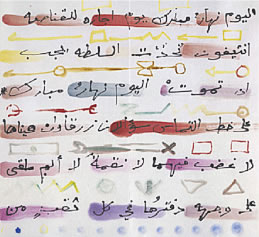

Middle East Art Now - Study Day
Chaired by Camilla Cañellas and Rose Issa Saturday 20 May, 10.00–17.00BP Lecture Theatre, The British Museum
Admission £18, concessions £12, booking required
This conference explores different aspects of, and new perspectives on the contemporary art of the Middle East. The day introduces some of the artists in the exhibition Word into Art: Artists of the Modern Middle East who discuss their work and an international line up of art historians, writers and artists discuss the roots and global impact of Middle Eastern art.
Followed by reception at 17.30
Call +44 (0)20 7323 8181 orEmail boxoffice@thebritishmuseum.ac.uk

Etel Adnan, Blessed Day, Japanese fold out book. Lebanon/US, 1990
Etel Adnan, Blessed Day, Japanese fold out book. Lebanon/US, 1990
| 10.00 | Venetia Porter (British Museum) Curating Word into Art:Artists of the Modern Middle East |
| 10.30 | Sheila Blair (Boston College) The Art of the Word |
| 11.00 | Coffee |
| 11.30 | Nada Shabout (University of North Texas) Visualising the Word |
| 12.00 | Dineke Huizenga (University of Leiden) Travelling the Tigris:Contemporary Iraqi art in context |
| 12.30 | Rana Salam (London) The power of popular street culture in Beirut and its future |
| 13.00 | Lunch - please make your own arrangements |
| 14.00 | Tina Sherwell (Birzeit University) Palestinian Artists:Representation and Identity |
| 14.30 | Jananne al-Ani (London) Telling Tales |
| 15.00 | Tea |
| 15.30 | Shiva Balaghi (Hagop Kevorkian Centre, New York University) The Exilic Moment as Art Form:Iranian Exile Artistsand the Islamic Republic of Iran |
| 16.00 | Panel of artists: Bahman Jalali, Farhad Moshiri, Khalil Rabah, Rachid Koraïchi |
| 17.30 | Concluding remarks |
| Followed by a reception jointly hosted with Edinburgh University Press to launch Sheila Blair's new book Islamic Calligraphy | |